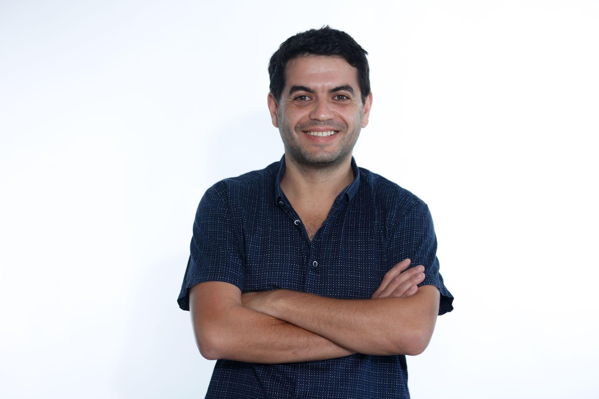
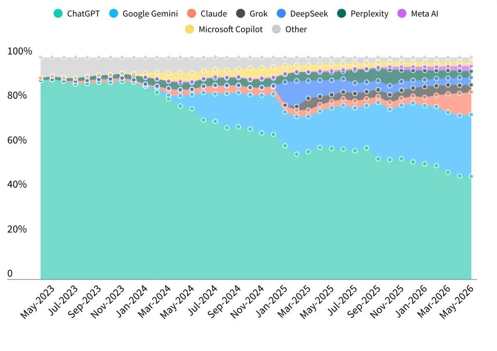

הכשרת AI
מבנה היום
כמה פעמים ביום אתם משתמשים ב‑AI?
ביום
ביום
חלק מהשגרה
לאילו צרכים אתם משתמשים ב‑AI בעבודה?
ומה עם השימוש באופן אישי?
מה הצ'אט החביב עליכם?
ChatGPT
OpenAI
Gemini
Claude
Anthropic
Copilot
Microsoft
אין תשובה נכונה — כל כלי חזק במשהו אחר. על זה בדיוק נדבר בהמשך.
קצת עליי
ליווי רשויות מגוונות בתוכנית "הזירה" של קרן בלומברג — הכשרת עובדי רשויות בעבודה עם נתונים וכלים של חשיבה עיצובית, וניתוח נתונים בכלי Power BI
מעבר של רשויות לקבלת החלטות מבוססת נתונים
מתכנן ערים במינהלת להתחדשות עירונית — עיריית בת‑ים
מנחה תהליכים עם כלי AI לרשויות מקומיות וארגונים
מוביל תהליכי שיתוף ציבור ותכנון עירוני משתף

נעים להכיר —
למה כל כך חשוב לעבוד עם נתונים?
השפעה על חיי התושב
הרשות אחראית על ניקיון, מרחב ציבורי, חינוך, תחבורה ועוד
החלטות מבוססות נתונים
חיסכון בכספים, התאמה לרצון התושבים וניהול עירוני תקין
שקיפות ומנהל תקין
הגברת תחושת השקיפות והאמון מול התושבים
למה כל כך חשוב לעבוד עם נתונים?
אז מה אפשר לעשות עם בינה מלאכותית?
כתיבה וניסוח
מיילים, מכתבים והודעות לתושבים
מצגות
מנושא או ממסמך — תוך דקות
ניתוח נתונים ומידע
אקסלים, סקרים, מגמות ופערים
סיכומי דיון
מתמלול לפרוטוקול עם משימות
חיפוש ומחקר
איסוף מידע ותשובות מהירות
יצירת תוצרים
תמונות, אינפוגרפיקות ופודקאסטים
בין חשש לסקרנות
מה ההשפעות של AI
לרוץ מהר
רק כדי להישאר במקום
כולם מדברים על AI, כל יום צץ כלי חדש — ונדמה שאם לא נרוץ כל הזמן, נישאר מאחור.

שלוש השפעות גדולות של AI על העולם
כלכלית
שוק העבודה ואופן העבודה משתנים.
חברתית
האמון הציבורי נסדק.
גאופוליטית
מתנהל מרוץ AI בין מעצמות.
מה מטריד אותנו בבינה המלאכותית?
״זה ייקח לי את העבודה.״
״אני לא בנאדם טכנולוגי.״
״אי אפשר לסמוך על מה שזה אומר.״
״ומה עם המידע והפרטיות שלי?״
אם AI יעשה הכול —
מה יקרה למוח שלנו?

ניוון או שילוב?
ככל שנעביר ל‑AI יותר חשיבה, כתיבה וזיכרון — כך ״שרירי״ החשיבה שלנו עלולים להיחלש.
ניוון
הישענות יתר מחלישה כתיבה, זיכרון ושיפוט ביקורתי
מה נשאר שלנו
השיפוט, ההקשר המקומי, האחריות והערכים — אלה שלנו
השילוב הנכון
AI מבצע ומאיץ — אנחנו מובילים, מכוונים ומבקרים
אז מה AI כן — ומה לא?
הוא כן
הוא לא
תפסו את הטעות
התשובה נשמעת בטוחה לגמרי, ויש בה שתי טעויות. מי מוצא אותן?
AI (כנראה) לא יחליף אותנו🙂
מי שידע להשתמש בו — כן יחסוך זמן, יעבוד בצורה יעילה יותר, ויצליח להשתלב בטכנולוגיה המשתנה.
מבוא לבינה מלאכותית
איך זה עובד באמת — וכמה כללי אצבע שיהפכו כל שימוש לחכם ובטוח יותר.
נתח השוק של כלי ה‑AI מאז 2023
ChatGPT עדיין מוביל
הראשון והמוכר — עדיין בעל נתח השימוש הגדול ביותר.
Gemini בזינוק
צומח במהירות — בזכות השילוב בחשבון Google ובמערכת הממשלתית.
השורה התחתונה
השוק מתפצל — שווה להכיר כמה כלים

ChatGPTGeminiנתח שימוש בצ'אטבוטים של AI · 2023–2026
איך פועלת בינה מלאכותית ג'נרטיבית (שיוצרת תוכן)
למידה מטקסט
המודל ״קרא״ כמויות עצומות של טקסט וזיהה דפוסים בשפה.
איך פועלת בינה מלאכותית ג'נרטיבית (שיוצרת תוכן)
חיזוי הסתברותי
לכל מילה הוא מחשב מה המילה הסבירה הבאה — צעד אחר צעד.
איך פועלת בינה מלאכותית ג'נרטיבית (שיוצרת תוכן)
הרכבת תשובה
כך נבנה משפט שלם — מנוסח היטב, אך לא בהכרח ״יודע״ שהוא נכון.
פשוט מנבא את המילה הבאה
כמו ההשלמה האוטומטית בטלפון — אבל חכמה פי אלף. תשלימו את המשפט בראש:
התשובה הראשונה היא טיוטה — לא סוף הדרך
העבודה עם AI היא דיאלוג: מנסחים, מקבלים, מתקנים, ומבקשים שוב. כך מגיעים לתוצר טוב.
מנסחים בקשה ראשונה
קוראים בעין ביקורתית
״תקצר״, ״תוסיף דוגמה״
מדויק ומותאם לכם
הטיות של ה‑AI
סטריאוטיפים
יכול לשכפל הנחות על מגדר, גיל או מוצא.
חוסר ייצוג
נושאים מקומיים או נישתיים מיוצגים פחות טוב.
נטייה לרַצות
נוטה להסכים עם מה שנראה שאנחנו רוצים לשמוע.
הפתרון: שיקול דעת אנושי. במיוחד בנושאים רגישים או הנוגעים לציבור.
מה שנכנס לכלי ציבורי — עלול לא להישאר פרטי
כעובדי רשות מקומית אנחנו מחזיקים במידע רגיש על תושבים — אסור להעלות אותו לכלי AI שאינו מאובטח.
block מה אסור להעלות
verified_user אז איך כן אפשר?
מה אני עושה ברשות?
למי אין על המחשב Gemini או Copilot?
נשתמש ב‑Gemini או Copilot בשלבים המעשיים הבאים.
למה לא לשתף מידע אישי עם ה‑AI?
לא נטען? פתחו את הסרטון בפייסבוק ↗איך כותבים פרומפט טוב — הנוסחה
״התנהג כמו...״
למי, למה, באיזה רקע
מה בדיוק לעשות
אורך, סגנון, מבנה
פרומפט טוב מול פרומפט פחות טוב
אותה משימה של דובר/ת הרשות — שני ניסוחים, ותוצאה שונה לגמרי.
כללי הזהב לפרומפט מנצח
היו ספציפיים
תנו הקשר
הגדירו פורמט
תנו דוגמה
הגדירו תפקיד
שפרו בדיאלוג
איך עובדים עם Gemini
היכנסו ל‑gemini.google.com והתחברו עם חשבון Google.
כתבו את הבקשה בתיבת ההודעה — בשפה חופשית.
בונים פרומפט באתר
romanai.net/ai-promptיאללה, פותחים מחשב
בחרו משימה אמיתית מהשבוע — מייל, סיכום או נוהל. היעזרו בדף שכתבתם בו מוקדם יותר.
כתבו פרומפט שכולל תפקיד, הקשר, משימה ופירוט של מה שתרצו.
הריצו בכלי (Gemini או Copilot) וקראו את התוצאה.
בדקו את התוצאה — מה הייתם מתקנים?
שפרו בדיאלוג
המסקנה: הכוח האמיתי הוא בדיאלוג, לא בפרומפט המושלם הראשון.
שיתוף קצר של ההתנסות
מי רוצה להראות פרומפט שכתב? נשמע 2–3 דוגמאות מהקבוצה.
מה כתבתם?
איזו משימה בחרתם, ואיך ניסחתם את הפרומפט.
מה קיבלתם?
מה דייק כבר בפעם הראשונה, ומה הפתיע.
מה הייתם משפרים?
איזה תיקון בדיאלוג שיפר את התוצאה.
עבודה עם נתונים —
ניתוח קובצי נתונים (אקסל) ומחקר מעמיק
שימוש בנתונים, ניתוח והגעה לתובנות בעזרת בינה מלאכותית.
ניתוח קובץ אקסל
- באפריל קפיצה של 50% בפניות
- רוב הפניות: תברואה ותאורה
- זמן הטיפול הממוצע ירד
מחקר מעמיק
מחקר מעמיק וניתוח קובץ נתונים
מתנסים ב‑Gemini או Copilot
ניתוח קובץ נתונים
מחקר מעמיק
יצירת אפליקציות (כן כן)
מתארים מה צריך — ומקבלים כלי קטן ועובד, בלי לכתוב שורת קוד.
מה אפשר לבנות
כלים קטנים — טופס, מחשבון או צ'אט בוט פשוט.
דוגמה
מחשבון זכאות פשוט לפנייה של תושב.
לא נעמיק כאן — חשוב רק לדעת שזה קיים ונגיש. שימו לב: יצירת אפליקציות וסרטונים צורכת משאבים רבים, ולרוב מוגבלת ברמת המנוי.
מדריך לימוד ב‑Gemini או Copilot
ב‑Gemini או Copilot בחרו במצב ״למידה מודרכת״ (Guided Learning).
כתבו מה תרצו ללמוד.
Gemini או Copilot יפרק את הנושא לשלבים ויסביר בהדרגה.
ענו על שאלות התרגול שהוא מציג בדרך.
בקשו דוגמאות, הבהרות והעמקה לפי הצורך.
יצירת גרף מקובץ נתונים
בונים אפליקציה וגרף מקובץ נתונים
מתנסים ב‑Gemini
בונים אפליקציה
ב‑Canvas מתארים כלי קטן לעבודה: מחשבון זכאות, טופס פנייה או רשימת בדיקה.
גרף מקובץ נתונים
מעלים קובץ בלי פרטים מזהים ומבקשים גרף ושלוש תובנות.
tips_and_updates אין קובץ? מבקשים מ‑Gemini ליצור קובץ נתונים לדוגמה.
סקירת כלים
מי הם הכלים המרכזיים, מה הייעוד של כל אחד, ומתי לבחור במה.
כלי AI מרכזיים לפי סוג המשימה
מחוללי שיחה וטקסט
ChatGPT · Gemini · Claude · Copilot
מצגות ותוכן
Gamma · NotebookLM · Canva AI
מחוללי תמונות
Nano Banana · ChatGPT Images · Midjourney
מחוללי וידאו
Veo 3 · Sora 2 · Kling
יצירת אפליקציות
Base44 · Lovable · Google AI Studio
ניתוח מסמכים ונתונים
NotebookLM · Claude · ChatGPT
כל כלי מנסה לעשות יותר — Gemini, ChatGPT ו‑Copilot כבר כותבים, יוצרים תמונות, מתזמנים משימות ואפילו עורכים וידאו. המגמה: להשאיר אתכם בתוך כלי אחד.
ארבעת הגדולים — מה ההבדל
ChatGPT
הוורסטילי והמוכר. מצוין לכתיבה, רעיונות ומשימות כלליות.
Gemini
משולב בחשבון Google ובחיפוש. נוח למשתמשי Gmail ו‑Docs.
Claude
חזק בטקסטים ארוכים, ניסוח מוקפד וניתוח מסמכים.
Copilot
משולב ב‑Office 365 ומאובטח ברמה ארגונית.
בבסיסם כולם דומים — ההבדל הוא באקוסיסטם, בשילוב עם הכלים שלכם וברמת האבטחה.
Google Workspace ו‑Gemini בממשלה
ויזואליזציה בעזרת AI ועבודה עם הטלפון
מצגות, גרפים ותמונות — וגם איך עובדים עם Gemini מהטלפון.
לעבוד עם Gemini מהטלפון
התקינו את אפליקציית Gemini (חשבון Google) או את אפליקציית Copilot (חשבון Microsoft) והתחברו.
הפעילו בקול: ״Hey Google״ או בלחיצה ארוכה על כפתור ההפעלה.
דברו במקום להקליד — לחצו על המיקרופון ושאלו בקול חופשי.
שתפו תמונה או צילום מסך ישירות: ״מה כתוב כאן?״ או ״סכם לי את זה״.
השיחות מסונכרנות — מתחילים בנייד בדרך וממשיכים בדפדפן במשרד.
מצגת או גרף עם Gemini Canvas
בתיבת ההודעה ב‑Gemini בוחרים Canvas.
מבקשים מצגת על נושא, או מעלים קובץ נתונים ומבקשים גרף.
התוצר נפתח בחלון עריכה בצד — משנים בבקשה נוספת או ישירות.
מייצאים ל‑Google Slides / Docs או משתפים קישור.
יצירת תמונה ב‑Gemini או Copilot
כותבים „צור תמונה של…” ומתארים מה רוצים לראות.
מפרטים: נושא, סגנון, צבעים ופורמט (פוסטר, ריבוע לרשתות).
אפשר להעלות תמונה קיימת ולבקש לערוך אותה.
משפרים בדיאלוג: „תוסיף…”, „בלי טקסט”, „יותר בהיר”.
לומדים לעבוד עם NotebookLM
מעלים את המקורות שלכם — נהלים, פרוטוקולים ומדריכים — והכלי עונה, מסכם ויוצר רק על בסיסם.
איך עובדים עם NotebookLM
היכנסו ל‑notebooklm.google.com וצרו מחברת חדשה.
העלו מקורות: PDF, מסמכים וקישורים.
שאלו שאלות — התשובות מגיעות עם הפניה למקור.
הפיקו ״סקירת אודיו״ (פודקאסט) בלחיצה אחת.
צרו מדריך לימוד, סיכום או שאלות חזרה.
NotebookLM — ארבעה תוצרים ממקור אחד
פודקאסט
שיחת אודיו שמסבירה את החומר
מצגת
שקופיות מסודרות מהתוכן
אינפוגרפיקה
תקציר ויזואלי לעין
מדריך
צעד-אחר-צעד לעובדים
הכול נשען על המקורות שהעליתם — לכן מדויק ובשליטתכם.
תרגול 4 · ממסמך לתוצר ב‑NotebookLM
העלו מסמך לא רגיש (נוהל, מדריך, דו״ח פומבי).
שאלו 2 שאלות כדי לראות שהוא מבין את המקור.
צרו תוצר אחד: פודקאסט, מצגת או מדריך.
הציגו לזוג השני — מה יצא טוב ומה הייתם מתקנים.
Copilot — בתוך Office 365
רוב הרשויות כבר מחזיקות ברישוי Office. Copilot יושב בתוך הכלים שאתם עובדים איתם כל יום:
Word
ניסוח, עריכה וסיכום מסמכים
Outlook
כתיבת מיילים ותקצור שרשורים
Teams
סיכום פגישות ומשימות
Excel
ניתוח נתונים ונוסחאות
התנסות: Copilot בתוך Word ו‑Excel
בחרו צד אחד, פתחו מסמך אמיתי שלכם — ולחצו על כפתור Copilot. נסו שתיים-שלוש בקשות.
Word
״נסח טיוטת מכתב לתושב בנושא…״
״סכם את המסמך הזה בחמש נקודות.״
״שכתב את הפסקה בטון רשמי וקצר יותר.״
Excel
״נתח את הטבלה וזהה מגמות בולטות.״
״הצע נוסחה שתסכם לפי קטגוריה.״
״צור גרף שמשווה בין החודשים.״
סיכום, טיפים ושיתוף מידע
בניית אפליקציה ב‑Base44 — בלי קוד
היכנסו ל‑base44.com ותארו במילים את האפליקציה.
Base44 בונה ממשק עובד — בלי שורת קוד.
דייקו בשיחה: ״הוסף טופס״, ״שנה צבעים״, ״חבר נתונים״.
בדקו, שתפו קישור או פרסמו את האפליקציה.
מתאים לכלים פנימיים: טפסים, דשבורדים ומחשבונים.
הדגמה חיה: בונים אפליקציה יחד
פרסונליזציה — שהכלי יכיר אתכם
בהגדרות אפשר לספר לכלי מי אתם ואיך לעבוד איתכם — וזה נשמר לכל השיחות.
מי אתם
״עובד/ת באגף שירות לתושב ברשות מקומית.״
איך לדבר אליכם
״עברית רשמית, תשובות קצרות וענייניות.״
מה חשוב לכם
״תמיד לציין מקורות ולסמן אי-ודאות.״
מה למדנו היום?
כל אחד מספר בקצרה — מה הצליח, ודוגמה אמיתית מהעבודה. נלמד הכי טוב אחד מהשני.
מה הצליח לכם?
כלי או פרומפט שעבד טוב והפתיע אתכם לטובה.
דוגמה אמיתית
משימה ממשית מהעבודה — מייל, סיכום, נוהל או תמונה.
מה תיישמו מחר?
דבר אחד קטן שתתחילו להשתמש בו כבר מחר בבוקר.
כותבים יחד שיר — ומנקדים אותו
כותבים עם Gemini או Copilot שיר קצר על היום שלנו, ומדביקים אותו בנקדן של דיקטה כדי לקבל ניקוד מלא — כך המוזיקה תבטא את המילים נכון.
spellchecknakdan.dicta.org.ilopen_in_newפתיחת הנקדןהופכים את השיר למוזיקה עם Suno
מדביקים את השיר המנוקד ב‑Suno, בוחרים סגנון מוזיקלי — ותוך דקה יש לנו להיט עירוני.
music_notesuno.comopen_in_newפתיחת Sunoמה לקחנו מהיום
איך AI עובד
חיזוי המילה הבאה · טיוטה ראשונה · הטיות והזיות
כתיבת פרומפט
תפקיד · הקשר · משימה · פורמט
ארגז הכלים
Gemini · Copilot · NotebookLM · Base44
שימוש אחראי
פרטיות · אמינות · שיפוט אנושי
המשוב שלכם — ומה הלאה
מחר בבוקר
איך ממשיכים
נשמח למשוב קצר — מה היה הכי שימושי, ומה הייתם רוצים להעמיק.
תודה רבה
עכשיו הכלי על השולחן שלכם. הצעד הראשון הוא פשוט להתחיל — כבר מחר בבוקר.